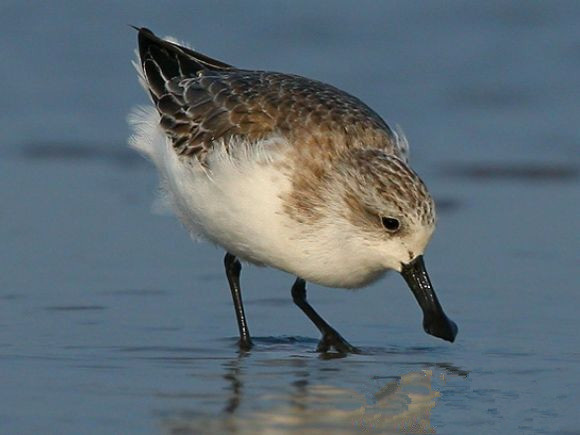
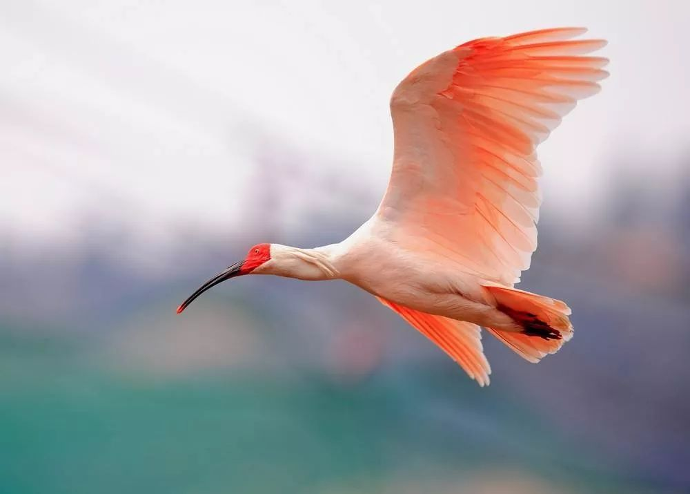
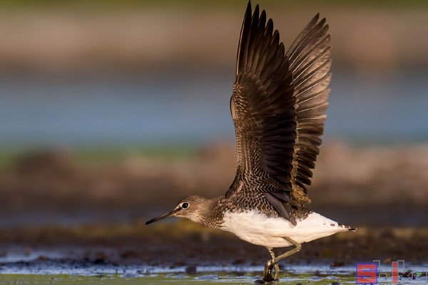

黑鹳 迁徙鸟类（仅在西班牙为留鸟） 青海 我国一级保护动物 约1000只
黑鹳（学名：Ciconia nigra）是一种体态优美，体色鲜明，活动敏捷，性情机警的大型涉禽。成鸟的体长为1-1.2米，体重2-3千克；嘴长而粗壮，头、颈、脚均甚长，嘴和脚红色。
朱鹮 迁徙鸟类 陕西南部、河南、浙江等地 濒危 约4400只
朱鹮（学名：Nipponia nippon）古称朱鹭、红朱鹭，朱鹮系东亚特有种。中等体型，体羽白色，后枕部有长的柳叶形羽冠，额至面颊部皮肤裸露，呈鲜红色。
黄腹角雉 留鸟 浙江（主要）、福建、广东、湖南、江西 国家一级重点保护动物 约4000只
黄腹角雉（学名：Tragopan caboti），别名角鸡、吐绶鸟，全长约50（雌）～65（雄）厘米。雄鸟上体栗褐色，满布具黑缘的淡黄色圆斑。